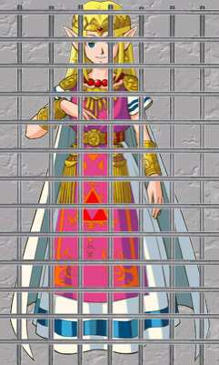

Save the Princess (using Databases)
Prinzessin Amalya wurde entführt und in ein dunkles Verlies gesperrt. Du hast das Verlies bereits erreicht, aber es ist mit einer digitalen Sicherung verschlossen. Prinzessin Amalya flüstert Dir zu, dass die Tür nur über eine Statusänderung in der Kerker-Datenbank auf dem Server 172.18.0.108 geöffnet werden kann.